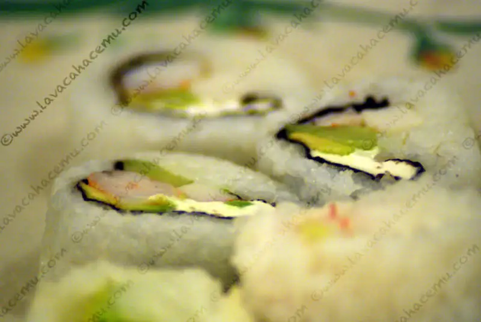

Ebi Maki

{kind=link}

La casa del Sr. R siempre inspira a que uno saque lo mejor de sí, especialmente en lo culinario. Y de hecho estos sushis no fueron hechos por mí, sino por la Sra. R (:P) y no porque uno no haya querido hacer algo de comer esa noche, sino que cómo puedes competir con la habilidad colectiva un hogar donde compran arroz de sushi por costales? nah, si acaso, nosotros hacemos sushi 3 o 4 veces al año, nop, esa vez mejor hice unos Kofta Kebabs. Pero si te preguntabas para qué se usaron los camarones de ayer, si no fue para comer con salsa de coctel; fue para esto, california rolls, creo que vendrían siendo, camarón, aguacate y queso filadelfia. Esta entrada hizo que me acordara de una vez que fuimos al mercado de mariscos en Ensenada donde escuchamos a una señora (de esas de lentes de mosca) que preguntó algo como "y aqui venden surimi?"... :| hazme el ch-g-do favor!!! vas al mercado de mariscos donde los pescados no llevan ni 24 hrs de haber dejado de nadar... y piensas comprar SURIMI!!!!????? pero bueno, no se puede pedir mucho de ese tipo de doñas :P.